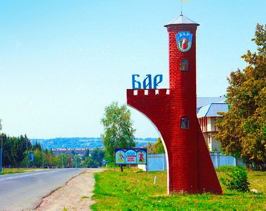
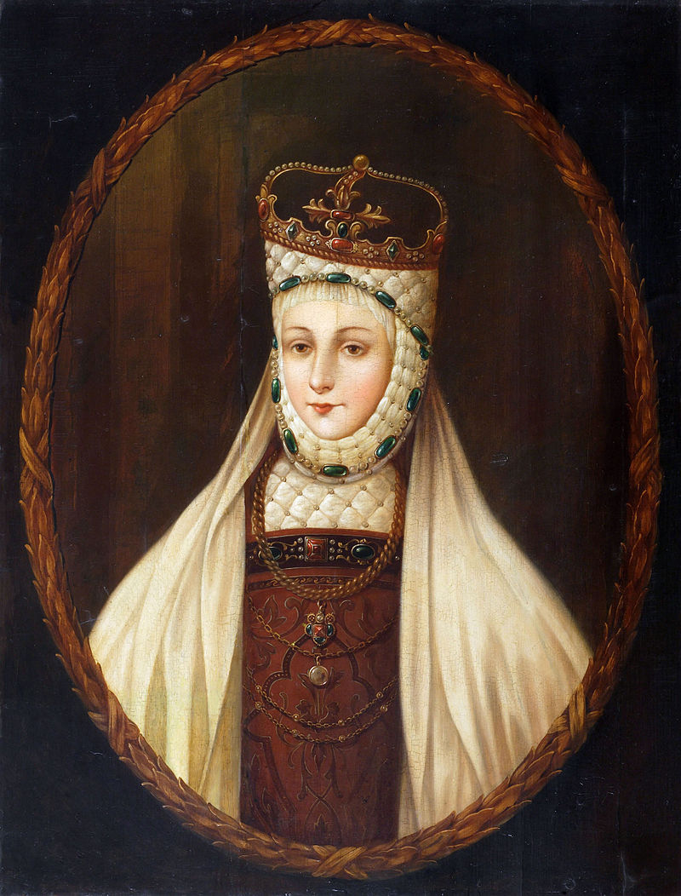
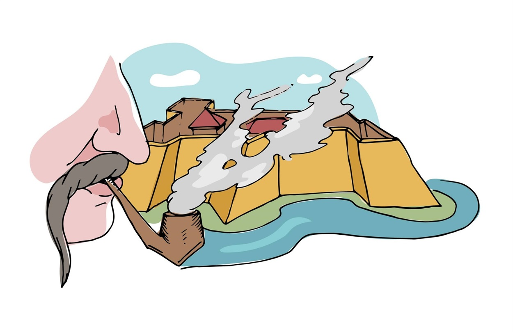

Бар — місто в Жмеринському районі України, колишній адміністративний центр Барського району Вінницької області, місто районного значення (з 1938 року). Населення міста — 15 775 осіб. (Дані станом на 1 січня 2020 року). З 7 вересня 2016 року входить до Барської міської громади і є її центром.
Бона Сфорца

Бона була третьою дитиною своїх батьків. Коли їй було 8 місяців батько помер, мати переїхала із замку Вісконтео в Павії до Мілану. Дядько Людовік захопив владу у Мілані. Джан Галеаццо був законним спадкоємцем Міланського герцогства, але його дядько і регент Людовико Сфорца, відомий в історії як "Іл Моро", узурпував владу. Він боявся, що мешканці Мілана повстануть і встановлять Франческо Сфорцу, популярного сина Джана Галеаццо. Щоб звести до мінімуму ризик, Людовіко відділив хлопчика від своєї сім'ї . Плани були перервані італійською війною 1499-1504 років. Французький король Людовик XII скинув Людовіко. У лютому 1500 р. Ізабелла повернулась до рідного Неаполя. Війна досягла Неаполітанського королівства, і дядько Ізабелли Фредерік з Неаполя був повалений. Разом з іншими родичами вона тимчасово сховалась в Арагонському замку на о.Іскія.
У квітні 1502 року Ізабелла та її єдина вціліла дочка Бона оселилися в замку Норманно-Свево в Барі. Там Бона почала свою освіту. Її викладачі включали італійських гуманістів Crisostomo Colonna і Antonio de Ferraris, які викладають її латинську, класичну літературу, математику, історію, право, природничі науки, богослов'я, навіть географію. Бона також уміла грати на кількох музичних інструментах.
Закрити історію
ЗАМОК

У 1636 р. у Бар переніс свою резиденцію гетьман Станіслав Конецпольський. Він почав будівництво нового замку і валів у 1630—1647 рр. на чолі з французьким архітектором де Бопланом. За його планами створено чотирикутну фортецю з чотирма бастіонами, 6 м у висоту. Замок Бар став третьою за величиною (після Камянця і Меджибожа) фортецею Речі Посполитої, й разом із Бердичевим Бар називали «брама польської України». Сьогодні на місці фортеці є парк, оформлений на початку ХХ століття.
У часи повстання 1648—1657 рр. під керівництвом Богдана Хмельницького Бар був одним з важливих об'єктів, за який точилися запеклі бої.
На захоплення Бара Богдан Хмельницький послав полковника Максима Кривоноса з військом. Ще перед приходом Кривоноса в місті сталося повстання жителів, яких довела до цього свавільними здирствами і знущаннями команда шляхтича Броневського. Командир гарнізону Броневський утік з міста. Замість нього сюди послав польський гетьман Потоцький свого сина Андрія, посиливши гарнізон фортеці німецькими найманцями. Польське командування вважало, що місто і фортеця надійно укріплені. Адже коло фортеці теж був глибокий рів, наповнений водою.і
НАШЕ УЛЮБЛЕНЕ МІСТО!